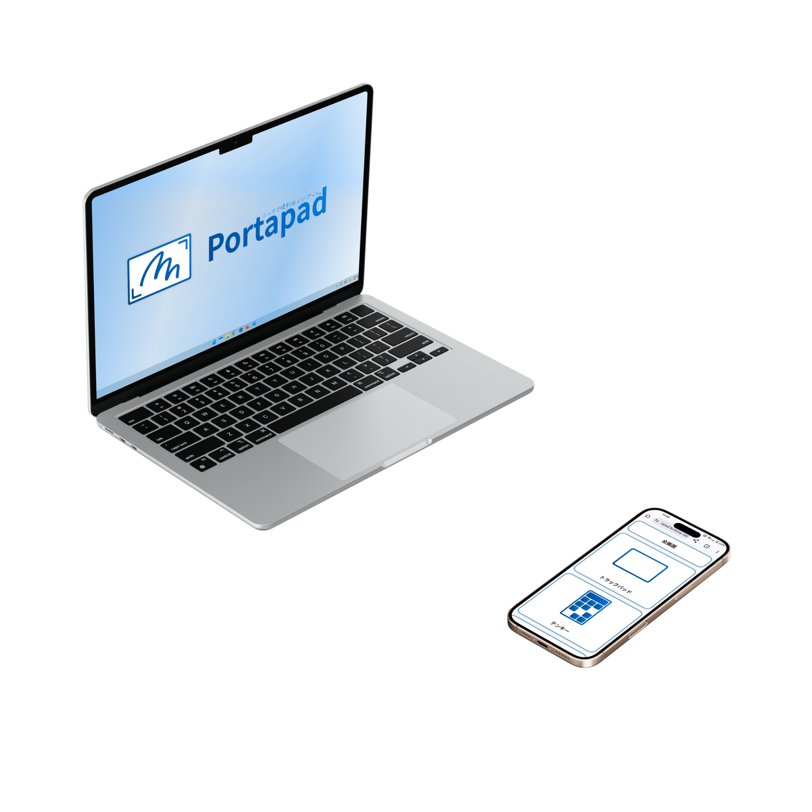
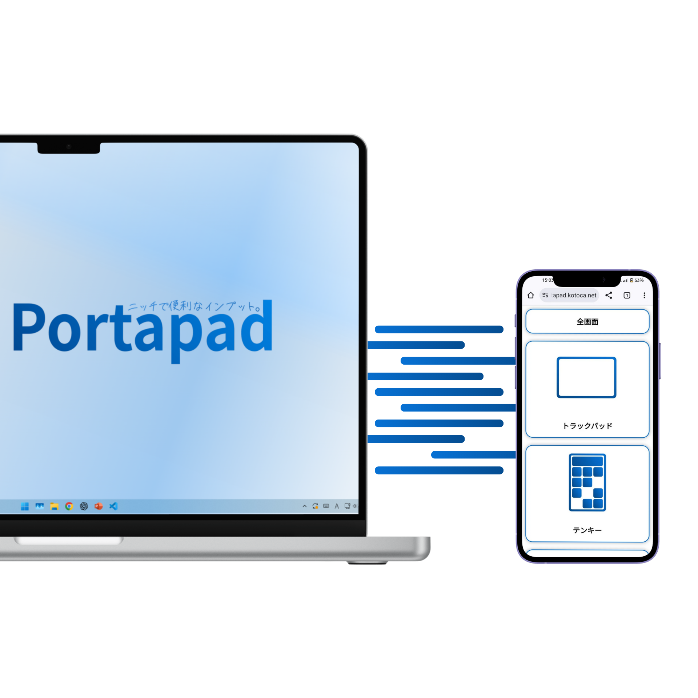

スマホをPCの操作パッドに

PortaPad

スマホと PC をつなぐ
離れた場所からでも、スマートフォンだけで PC を操作できます。マウスやキーボードとして使えるので、作業のちょっとした補助にも向いています。

軽快に動く操作感
P2P 接続を前提に、できるだけ軽い通信で動くように設計しています。カーソル移動やクリックを、できるだけ自然に扱えるようにしています。
QR 認証で安全に
初回接続時は QR コードを使って認証します。PC 側で発行された鍵をスマホで読み取ることで、なりすましを防ぎます。
更新情報
2025/12/26
サービス準備中
シグナリングサーバーを含む公開環境の調整を進めています。
2025/08/09
v2.0.1 リリース
アプリ本体と Web クライアントを更新しました。
2025/06/20
インストーラ改善
初回セットアップ時のエラー表示と導線を見直しました。
よくある質問
ペンタブレットは必要ですか？
必要ありません。スマートフォンだけで操作できます。
スマホ用アプリはありますか？
現在は Web 版のクライアントを利用します。
インストールでつまずいたら？
使い方ページを確認して、それでも解決しない場合は Contact から連絡してください。
開発者向け情報
リポジトリ
| ホストアプリ | PortaPad |
|---|---|
| クライアントサイト | portapad_web |
| シグナリングサーバー | Portapad_signal_pub |
ライセンス
PortaPad に関するサイトやアプリケーションは CC BY-SA 4.0 の範囲で公開しています。
不具合報告や改善提案は メール または各リポジトリの Issue からお願いします。